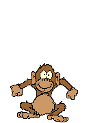
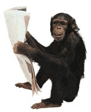
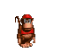

 Monkeys
Monkey is a common name that may refer to groups or species of mammals, in part, the simians of infraorder Simiiformes. The term is applied descriptively to groups of primates, such as families of New World monkeys and Old World monkeys. Many monkey species are tree-dwelling (arboreal), although there are species that live primarily on the ground, such as baboons. Most species are mainly active during the day (diurnal). Monkeys are generally considered to be intelligent, especially the Old World monkeys of Catarrhini.
Simians and tarsiers emerged within haplorrhines some 60 million years ago. New World monkeys and catarrhine monkeys emerged within the simians some 35 million years ago. Old World monkeys and Hominoidea emerged within the catarrhine monkeys some 25 million years ago. Extinct basal simians such as Aegyptopithecus or Parapithecus [35-32 million years ago], eosimiidea and sometimes even the Catarrhini group are also considered monkeys by primatologists.
Lemurs, lorises, and galagos are not monkeys; instead they are strepsirrhine primates. Like monkeys, tarsiers are haplorhine primates; however, they are also not monkeys.
Apes emerged within "monkeys" as sister of the Cercopithecidae in the Catarrhini, so cladistically they are monkeys as well. There has been resistance to directly designate apes (and thus humans) as monkeys, so "Old World monkey" may be taken to mean the Cercopithecoidea or the Catarrhini. That apes are monkeys was already realized by Georges-Louis Leclerc, Comte de Buffon in the 18th century.
